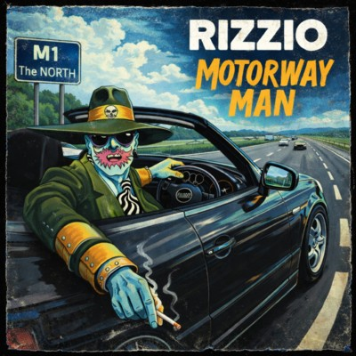

Yo, yeah First things first
You're gonna thirst for my new raps
Word of caution, this is not for saps
Claps, craps, because this is a trap
Come back and I'ma slap your missus
In my shirt, she put her scissors
But I put her correct
Don't flex, I get vex
You don't understand
I don't come from Afghanistan
I speak English, so hear this
When I speak, you go weak
'Cause I freak your brain
You're lame, you're not on my level
So go get a shovel
And dig to your lower level
Yeah, look up at my feet
Because you're beneath me
When it comes to the mental and physical
'Cause I get physical when it's time for play
Any day, any time, anywhere
I don't care, if you dare
I'm there, in your hair, everywhere
Up your back, Funk attack, I don't lack
Got my gat, on my back
So you're outta luck
Just don't Fuck
Sorry. Sorry, stop that
Yeah, and come back
I Fucking Fucked her, you better know
When Super Lover Rizzio comes for the Kitty
You better feed me
I don't want my dick bitten
I just want it licken
Use long, smooth strokes
Like you're using a paint brush
Don't rush it
And before you know,
God damn!
You sure do give a good blow!
"Fucking Hell, Rizzio"
Sorry, bitch
Next time read the small print
Or should I say the large, bold French letters
I'm a lawyer and I saw ya
In the alley, your that girl called Sally
From Thames Valley
If I played the game right
I'd have you tonight
First time 'round, I played it shite
Gave you benefit of the doubt
That's why I stuck my dick in your mouth
I know why you like this shit
You love to lick dick
But I know you make me sick
So now come outta my sight
I'm gonna throw a right
Upper hook and a jab
You might even get stabbed
I'm not nice
So my advice is look for mice or a mouse
'Cause I'm a man and not your spouse
Don't knock my door
You'll end up on the floor
Then I think you'll want some more
So time to head out
I'm on a tight shift
Gotta be nifty
Go down to M. one to Leicester
Like the TV advert said
You get a smarter investor
With your bitch is from Leicester
But I don't stay there too long
Got my rounds to do
Girls to please
Yo bitch, get on your knees
That's the one from Birmingham
Her name is Pam
Had her in a van in easy lay
So I'm on my way
Pass through Wolverhampton
Then onto Nottingham
Stay the night
Come early morning
Gotta hike it down to Peterborough
But the journey turned sour
Set myself up with a big motherfucking fat ho
"Later!"
I gotta go to Southampton
Meet an old party friend of mine
Her name is Jacka
I'm gonna mack her
On top of her brand new shag pile
And I do it doggy style for a while
Then she smiled
'Cause it's a setup
Then I get up to find her gorilla
But this ain't no Thriller in Manila
'Cause I give him a pinny and a broom
Clean up my motherfucking room
You lame-ass motherfucker
Or I'ma lock you in the locker
And bring over some big kweer fagit loving weirdos for you
They'll bend you over and give you a screw
No doubt your wife will love some too
But Rizzio don't play that
Yeah, man
I play hard down the boulevard
Played my last card
Because I'm larger than life
Don't need no wife
I'm a motorway man
M one, M four, M six, M eleven
Send the bitches to heaven
And that's how I'm going out
"Hey, Rizzio, where you go?"
Quite na, shut'che mouth
Later, bitch
I'm heading south